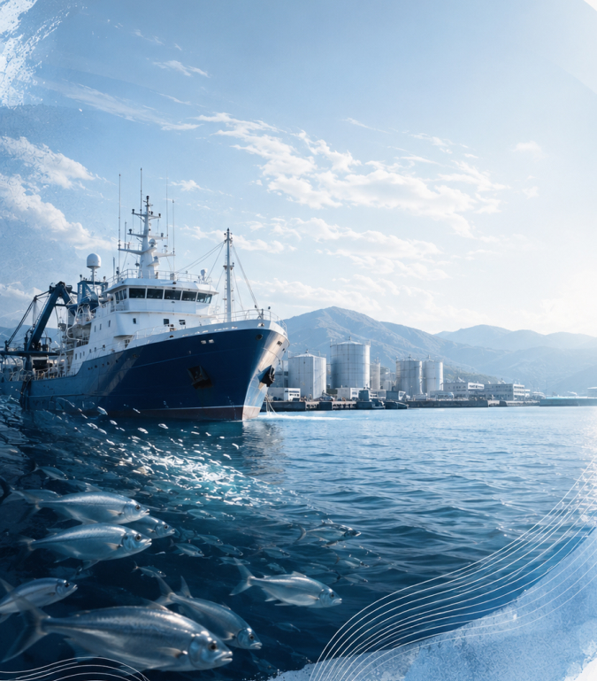
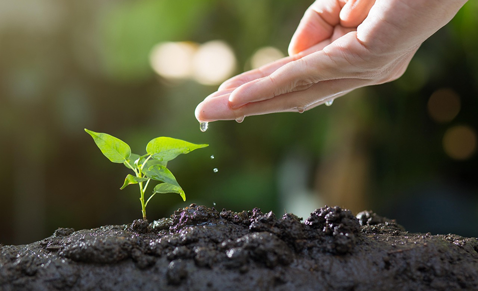
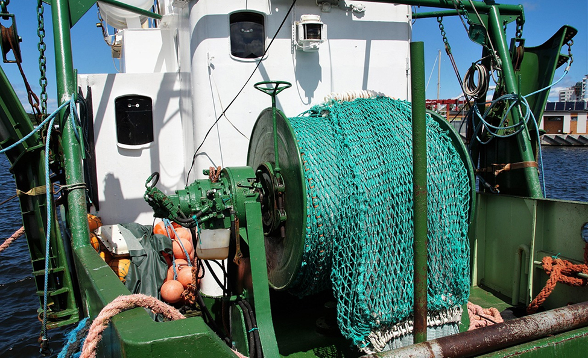

회사소개
회사소개
ABOUT COMPANY기업소개
기업소개
신선하고 깨끗한 것을 드리고 싶은 마음
사조대림이 함께합니다.

사조대림은 1945년 광복 이후 "낙후된 국내의 수산업을 선진국수준으로 향상시키겠다" 는 사명하에 서대양주식회사로 첫발을 내딛었습니다.
이후 수산자원의 획득 및 가공업체로 꾸준한 성장을 지속하였으며, 1964년 5월 수산자원 처녀수출을 계기로 외화획득에 앞장섰으며 각종 냉동, 냉장식품을 개발, 공급하여 국민의 건강한 식생활에 기여하였습니다. 한국경제의 큰 숲(大林)이 되겠다는 의미로 사명을 대림수산으로 변경 하였으며 2006년 사조그룹에 편입, 사조대림으로 개칭 하였습니다. 사조그룹의 수산부문 통합관리로 시너지 극대화 및 규모의 경제를 완성함으로써 명실상부한 국내 수산업을 대표하는 회사로 자리매김 하였으며, 이러한 효과로 경쟁력 있는 종합식품회사로 전진하고 있습니다.
사조대림은 대림선 어묵, 게맛살 등 연육 제품과 햄, 소시지육가공 등의 신선제품외에도 냉동, 냉장식품, 젓갈류, 김, 미역 등 해조류, 절임류 등 다양한 식품들을 생산, 판매하고 있습니다.
업계 최초로 과학적 최신 위생관리 기법인 해썹(HACCP)시스템을 도입했으며, 보다 신선하고 안전한 제품을 빠르게 소비자에게 공급 하기 위하여 일일 배송시스템을 도입하였습니다. 수산부문에서는 세계최다 횟감용 참치 선단을 가진 사조그룹과 수산부문을 통합함으로써 오는 시너지 효과로 트롤분야 업계 1위를 지키는 한편, 안정적인 수산물 공급을 위해 노력하였기에 수산자원의 남획과 고갈로 갈수록 심해지는 어려움 속에서도 수산물의 안정적인 공급을 책임지고 있으며, 수산 자원의 고갈방지를 위해서도 다각적인 방법으로 노력하고 있습니다.
인사말

사람과 가족을 생각하는
사조그룹은…
1971년 참치 독항사업으로 시작, 오대양을 누비며 도전 정신을 바탕으로 수산자원을 개척하며 바다는 무한한 영토라는 생각으로 자연과 하나되는 자연친화적 수산업을 선도하며 고객에게 믿음을 제공하는 세계 굴지의 수산기업으로 성장해 왔습니다.
'자연이 맛있다'라는 비전 아래 사조해표, 사조대림, 사조오양을, '생활이 즐겁다'라는 비전 아래 캐슬렉스 골프장을 한가족으로 맞이하며 그룹의 기반을 마련하였고 수산에 이은 축산사업에 대한 지속적인 수직 계열화를 통해 미래식량 자원개발부문에 있어 세계적인 경쟁력을 갖춰나가고 있습니다.
가족 같은 기업문화를 기본으로 하여 가족의 식탁에 안전과 건강함, 생활의 즐거움을 제공하고자 하는 뜨거운 열정과 미래를 향한 끊임없는 도전으로 식생활 문화를 선도하는 세계 일류 종합식품기업, 사조그룹입니다.
사조는 소중한 지구의 무한한 자원과
기술을 바탕으로
최고의 제품과 서비스를 창출하기 위해 존재합니다. 또한 궁극적으로는 우리 모두의 행복한 삶을 가꾸고 지키기 위해 노력하는 기업입니다. 합리적이고 혁신적인 경영을 통해 고객을 위한 최고의 가치를 창출하고, 그 가치를 다시 사회에 환원하는 것이 사조의 목표입니다.
사조의 역사는 수산자원 '개척'의 역사입니다. 1971년 참치 독항 사업으로 첫 출항한 이래 오대양을 개척해 온 사조의 도전정신은 오늘날까지 이어지며 미래로 나아갑니다. 수산업계의 선도기업으로 성장한 사조는 이제 식품과 축산으로 사업영역을 넓혀 최고의 제품을 생산하는 종합식품기업이 되었습니다. 이와 더불어 모든 사람들이 자연과 하나되는 삶의 기쁨을 누릴 수 있도록 자연친화적 레저사업을 통해 행복한 자연 사랑의 문화를 꽃피우고 있는 것도 사조의 밝은 미래를 위한 큰 수확입니다. 고객의 식탁에 안전하고 건강한 먹거리를 제공하며, 생활의 기쁨을 주는 환경을 만드는 것은 사조의 약속인 동시에 의지입니다. 앞으로도 사조는 가족의 건강과 행복, 그리고 우리 아이들의 밝은 미래를 위해 고객의 신뢰와 만족을 최우선으로 생각하는 정직한 경영을 펼쳐 나가겠습니다.
